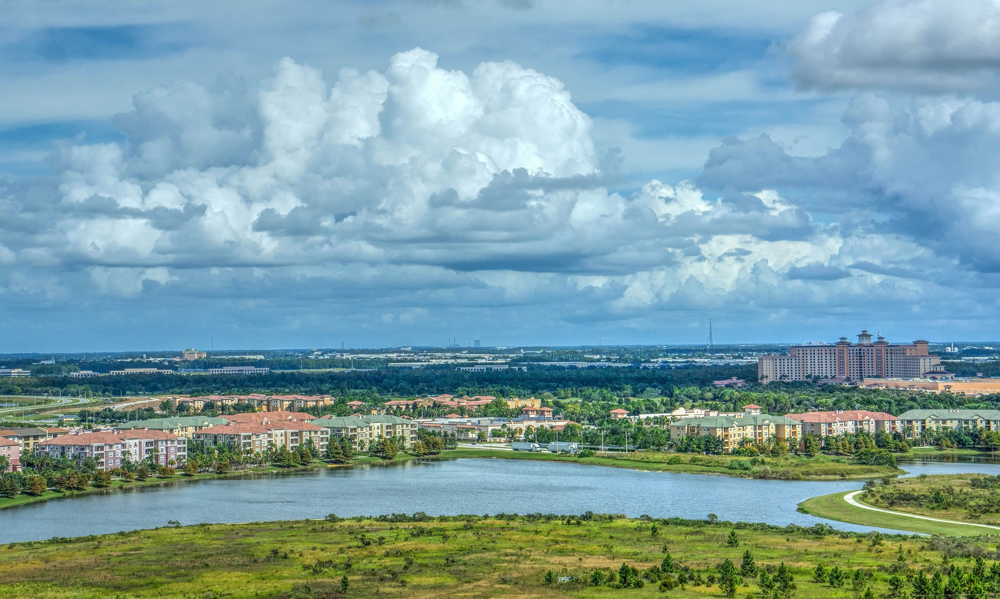
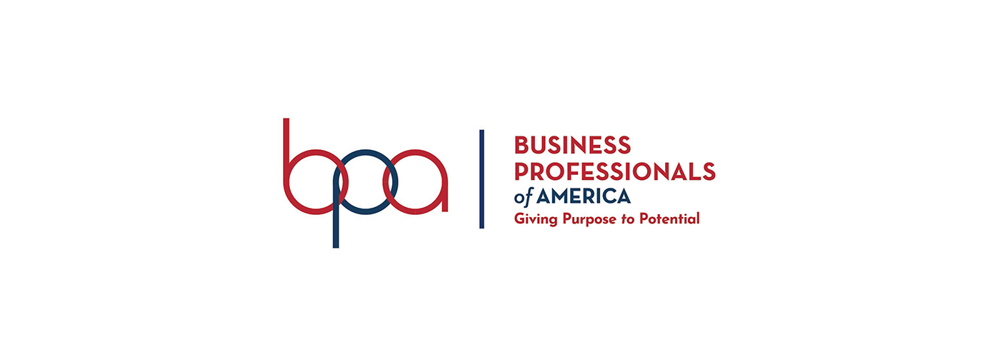

Introduction
Orlando, Florida is a big place, much like the NLC is a big event. Because of this, it is a necessary step in a great direction to explain to our valued bpa members the necessities to a clean and safe trip to Orlando, because let's face it, we are all pretty much like tourists. Transportation, Maps, Dress Attire, food, and attractions--we will have it all in one place for your convenience. All the people that work so hard to get to this event deserve the best, so let's focus on giving everyone a good trip here, with little frustration and maximum enjoyment. If you have never been one to travel, even more so now due to this unfortunate pandemic, we are not so different. Being in Idaho most of our lives, Orlando seems unreal to us as well. But we have you covered, and this will be an amazing year for not only the National Leadership Conference, but for all of those that can proudly call themselves members of The Business Professionals of America. Let's get started!
Time until NLC
 